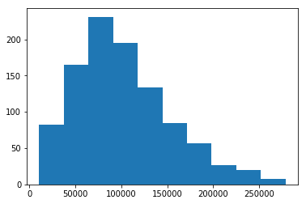
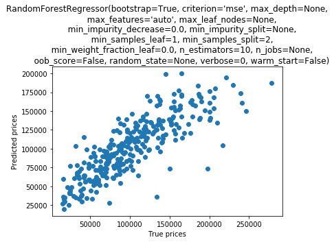
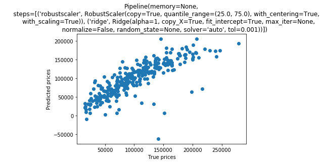
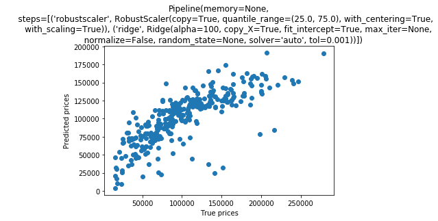
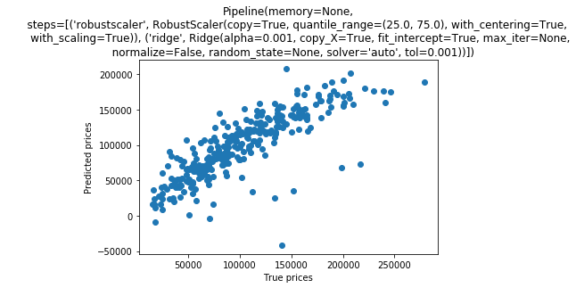
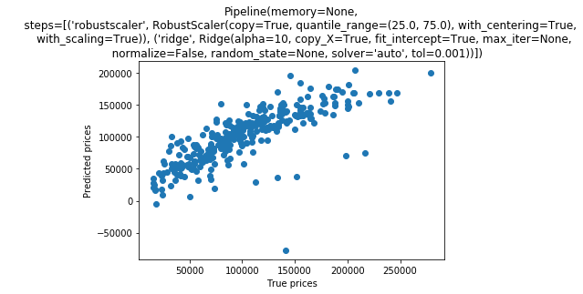
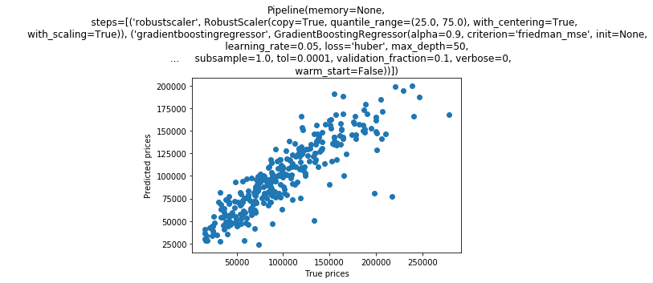

...: np.abs(corr_matrix["price_sqm"]).sort_values(ascending=False)
...:
...: # select all features to evaluate the feature importances
...: X = df.drop('price_sqm', axis=1)
...: y = df['price_sqm']
...:
...: X_train, X_test, y_train, y_test = train_test_split(X, y, test_size=0.3, random_state=121)
...:
<class 'pandas.core.frame.DataFrame'>
RangeIndex: 1019 entries, 0 to 1018
Data columns (total 55 columns):
name 1019 non-null object
district 1019 non-null object
latitude 1019 non-null float64
longitude 1019 non-null float64
year_built 1019 non-null int64
proj_area 1019 non-null int64
nbr_buildings 1019 non-null int64
nbr_floors 1019 non-null int64
units 1019 non-null float64
hospital 1019 non-null float64
price_sqm 1019 non-null int64
id 1019 non-null int64
bld_age 1019 non-null int64
dist_shop_1 1019 non-null float64
dist_shop_2 1019 non-null float64
dist_shop_3 1019 non-null float64
dist_shop_4 1019 non-null float64
dist_shop_5 1019 non-null float64
dist_school_1 1019 non-null float64
dist_school_2 1019 non-null float64
dist_school_3 1019 non-null float64
dist_school_4 1019 non-null float64
dist_school_5 1019 non-null float64
dist_food_1 1019 non-null float64
dist_food_2 1019 non-null float64
dist_food_3 1019 non-null float64
dist_food_4 1019 non-null float64
dist_food_5 1019 non-null float64
Elevator 1019 non-null int64
Parking 1019 non-null int64
Security 1019 non-null int64
CCTV 1019 non-null int64
Pool 1019 non-null int64
Sauna 1019 non-null int64
Gym 1019 non-null int64
Garden 1019 non-null int64
Playground 1019 non-null int64
Shop 1019 non-null int64
Restaurant 1019 non-null int64
Wifi 1019 non-null int64
tran_type1 1019 non-null object
tran_type2 1019 non-null object
tran_type3 1019 non-null object
tran_type4 1019 non-null object
tran_type5 1019 non-null object
tran_name1 1019 non-null object
tran_name2 1019 non-null object
tran_name3 1019 non-null object
tran_name4 1019 non-null object
tran_name5 1019 non-null object
dist_tran_1 1019 non-null float64
dist_tran_2 1019 non-null float64
dist_tran_3 1019 non-null float64
dist_tran_4 1019 non-null float64
dist_tran_5 1019 non-null float64
dtypes: float64(24), int64(19), object(12)
memory usage: 437.9+ KB
None
42
3
<class 'pandas.core.frame.DataFrame'>
Int64Index: 1003 entries, 0 to 1018
Data columns (total 83 columns):
latitude 1003 non-null float64
longitude 1003 non-null float64
year_built 1003 non-null int64
proj_area 1003 non-null int64
nbr_buildings 1003 non-null int64
nbr_floors 1003 non-null int64
units 1003 non-null float64
hospital 1003 non-null float64
price_sqm 1003 non-null int64
dist_shop_1 1003 non-null float64
dist_shop_2 1003 non-null float64
dist_shop_3 1003 non-null float64
dist_shop_4 1003 non-null float64
dist_shop_5 1003 non-null float64
dist_school_1 1003 non-null float64
dist_school_2 1003 non-null float64
dist_school_3 1003 non-null float64
dist_school_4 1003 non-null float64
dist_school_5 1003 non-null float64
dist_food_1 1003 non-null float64
dist_food_2 1003 non-null float64
dist_food_3 1003 non-null float64
dist_food_4 1003 non-null float64
dist_food_5 1003 non-null float64
Elevator 1003 non-null int64
Parking 1003 non-null int64
Security 1003 non-null int64
CCTV 1003 non-null int64
Pool 1003 non-null int64
Sauna 1003 non-null int64
Gym 1003 non-null int64
Garden 1003 non-null int64
Playground 1003 non-null int64
Shop 1003 non-null int64
Restaurant 1003 non-null int64
Wifi 1003 non-null int64
dist_tran_1 1003 non-null float64
dist_tran_2 1003 non-null float64
dist_tran_3 1003 non-null float64
dist_tran_4 1003 non-null float64
dist_tran_5 1003 non-null float64
district_Bang Kapi 1003 non-null uint8
district_Bang Khae 1003 non-null uint8
district_Bang Khen 1003 non-null uint8
district_Bang Kho Laem 1003 non-null uint8
district_Bang Khun Thian 1003 non-null uint8
district_Bang Na 1003 non-null uint8
district_Bang Phlat 1003 non-null uint8
district_Bang Rak 1003 non-null uint8
district_Bang Sue 1003 non-null uint8
district_Bangkok Noi 1003 non-null uint8
district_Bangkok Yai 1003 non-null uint8
district_Bueng Kum 1003 non-null uint8
district_Chatuchak 1003 non-null uint8
district_Chom Thong 1003 non-null uint8
district_Din Daeng 1003 non-null uint8
district_Don Mueang 1003 non-null uint8
district_Dusit 1003 non-null uint8
district_Huai Khwang 1003 non-null uint8
district_Khan Na Yao 1003 non-null uint8
district_Khlong San 1003 non-null uint8
district_Khlong Toei 1003 non-null uint8
district_Lak Si 1003 non-null uint8
district_Lat Krabang 1003 non-null uint8
district_Lat Phrao 1003 non-null uint8
district_Min Buri 1003 non-null uint8
district_Pathum Wan 1003 non-null uint8
district_Phasi Charoen 1003 non-null uint8
district_Phaya Thai 1003 non-null uint8
district_Phra Khanong 1003 non-null uint8
district_Pom Prap Sattru Phai 1003 non-null uint8
district_Prawet 1003 non-null uint8
district_Rat Burana 1003 non-null uint8
district_Ratchathewi 1003 non-null uint8
district_Sai Mai 1003 non-null uint8
district_Samphanthawong 1003 non-null uint8
district_Sathon 1003 non-null uint8
district_Suan Luang 1003 non-null uint8
district_Taling Chan 1003 non-null uint8
district_Thon Buri 1003 non-null uint8
district_Wang Thonglang 1003 non-null uint8
district_Watthana 1003 non-null uint8
district_Yan Nawa 1003 non-null uint8
dtypes: float64(24), int64(17), uint8(42)
memory usage: 370.2 KB
None

In [56]: def rmse_cv(model,n_folds=5):
...: kf = KFold(n_folds, shuffle=True, random_state=121)
...: rmse= np.sqrt(-cross_val_score(model, X_train, y_train, scoring="neg_mean_squared_error", cv = kf))
...:
...: # cv_scores = cross_val_score(model, X, y, cv=kf)
...: model.fit(X_train, y_train)
...: y_pred = model.predict(X_test)
...: r_sq_score = r2_score(y_test, y_pred)
...: plt.scatter(y_test, y_pred)
...: plt.title(model)
...: plt.xlabel("True prices")
...: plt.ylabel("Predicted prices")
...: # plt.text(-1,220000, ' R-squared = {}'.format(float(cv_scores.mean())))
...: # plt.text(-1,200000, ' R-squared Std = {}'.format(float(cv_scores.std())))
...: # plt.text(-1,180000, ' MSE = {}'.format(round(float(mean_squared_error(y_test, predicted)), 2)))
...: plt.show()
...: return(rmse, r_sq_score)
In [57]: from sklearn.model_selection import GridSearchCV
In [58]: param_grid = {
...: 'bootstrap': [True],
...: 'max_depth': [80, 90, 100, 110],
...: 'max_features': [9, 40],
...: 'min_samples_leaf': [3, 4, 5],
...: 'min_samples_split': [8, 10, 12],
...: 'n_estimators': [100, 200, 300, 1000]
...: }
...: # Create a based model
In [59]: rf = make_pipeline(RobustScaler(), RandomForestRegressor())
In [60]: # Instantiate the grid search model
In [61]: grid_search = GridSearchCV(estimator = rf, param_grid = param_grid,
...: cv = 5, n_jobs = -1, verbose = 2)
In [62]: grid_search.fit(X_train, y_train)
Fitting 5 folds for each of 288 candidates, totalling 1440 fits
[Parallel(n_jobs=-1)]: Using backend LokyBackend with 4 concurrent workers.
Traceback (most recent call last):
File "<ipython-input-62-231b374c92ba>", line 1, in <module>
grid_search.fit(X_train, y_train)
File "C:\Users\eviriyakovithya\AppData\Local\Continuum\anaconda3\lib\site-packages\sklearn\model_selection\_search.py", line 722, in fit
self._run_search(evaluate_candidates)
File "C:\Users\eviriyakovithya\AppData\Local\Continuum\anaconda3\lib\site-packages\sklearn\model_selection\_search.py", line 1191, in _run_search
evaluate_candidates(ParameterGrid(self.param_grid))
File "C:\Users\eviriyakovithya\AppData\Local\Continuum\anaconda3\lib\site-packages\sklearn\model_selection\_search.py", line 711, in evaluate_candidates
cv.split(X, y, groups)))
File "C:\Users\eviriyakovithya\AppData\Local\Continuum\anaconda3\lib\site-packages\sklearn\externals\joblib\parallel.py", line 930, in __call__
self.retrieve()
File "C:\Users\eviriyakovithya\AppData\Local\Continuum\anaconda3\lib\site-packages\sklearn\externals\joblib\parallel.py", line 833, in retrieve
self._output.extend(job.get(timeout=self.timeout))
File "C:\Users\eviriyakovithya\AppData\Local\Continuum\anaconda3\lib\site-packages\sklearn\externals\joblib\_parallel_backends.py", line 521, in wrap_future_result
return future.result(timeout=timeout)
File "C:\Users\eviriyakovithya\AppData\Local\Continuum\anaconda3\lib\concurrent\futures\_base.py", line 432, in result
return self.__get_result()
File "C:\Users\eviriyakovithya\AppData\Local\Continuum\anaconda3\lib\concurrent\futures\_base.py", line 384, in __get_result
raise self._exception
ValueError: Invalid parameter bootstrap for estimator Pipeline(memory=None,
steps=[('robustscaler', RobustScaler(copy=True, quantile_range=(25.0, 75.0), with_centering=True,
with_scaling=True)), ('randomforestregressor', RandomForestRegressor(bootstrap=True, criterion='mse', max_depth=None,
max_features='auto', max_leaf_nodes=None,
min_impurity_...s='warn', n_jobs=None,
oob_score=False, random_state=None, verbose=0, warm_start=False))]). Check the list of available parameters with `estimator.get_params().keys()`.
In [63]:
In [63]: rf = RandomForestRegressor()
In [64]: # Instantiate the grid search model
In [65]: grid_search = GridSearchCV(estimator = rf, param_grid = param_grid,
...: cv = 5, n_jobs = -1, verbose = 2)
...: # Fit the grid search to the data
...: grid_search.fit(X_train, y_train)
...: grid_search.best_params_
Fitting 5 folds for each of 288 candidates, totalling 1440 fits
[Parallel(n_jobs=-1)]: Using backend LokyBackend with 4 concurrent workers.
[Parallel(n_jobs=-1)]: Done 33 tasks | elapsed: 12.4s
[Parallel(n_jobs=-1)]: Done 154 tasks | elapsed: 44.9s
[Parallel(n_jobs=-1)]: Done 357 tasks | elapsed: 2.5min
[Parallel(n_jobs=-1)]: Done 640 tasks | elapsed: 4.2min
[Parallel(n_jobs=-1)]: Done 1005 tasks | elapsed: 7.2min
[Parallel(n_jobs=-1)]: Done 1440 out of 1440 | elapsed: 11.4min finished
C:\Users\eviriyakovithya\AppData\Local\Continuum\anaconda3\lib\site-packages\sklearn\model_selection\_search.py:841: DeprecationWarning: The default of the `iid` parameter will change from True to False in version 0.22 and will be removed in 0.24. This will change numeric results when test-set sizes are unequal.
DeprecationWarning)
Out[65]:
{'bootstrap': True,
'max_depth': 80,
'max_features': 40,
'min_samples_leaf': 3,
'min_samples_split': 8,
'n_estimators': 200}
In [66]: best_grid = grid_search.best_estimator_
In [67]: best_grid
Out[67]:
RandomForestRegressor(bootstrap=True, criterion='mse', max_depth=80,
max_features=40, max_leaf_nodes=None, min_impurity_decrease=0.0,
min_impurity_split=None, min_samples_leaf=3,
min_samples_split=8, min_weight_fraction_leaf=0.0,
n_estimators=200, n_jobs=None, oob_score=False,
random_state=None, verbose=0, warm_start=False)
In [68]: rf_best = make_pipeline(RobustScaler(), best_grid)
In [69]: rmse,r_sq_score = rmse_cv(rf)
C:\Users\eviriyakovithya\AppData\Local\Continuum\anaconda3\lib\site-packages\sklearn\ensemble\forest.py:246: FutureWarning: The default value of n_estimators will change from 10 in version 0.20 to 100 in 0.22.
"10 in version 0.20 to 100 in 0.22.", FutureWarning)
C:\Users\eviriyakovithya\AppData\Local\Continuum\anaconda3\lib\site-packages\sklearn\ensemble\forest.py:246: FutureWarning: The default value of n_estimators will change from 10 in version 0.20 to 100 in 0.22.
"10 in version 0.20 to 100 in 0.22.", FutureWarning)
C:\Users\eviriyakovithya\AppData\Local\Continuum\anaconda3\lib\site-packages\sklearn\ensemble\forest.py:246: FutureWarning: The default value of n_estimators will change from 10 in version 0.20 to 100 in 0.22.
"10 in version 0.20 to 100 in 0.22.", FutureWarning)
C:\Users\eviriyakovithya\AppData\Local\Continuum\anaconda3\lib\site-packages\sklearn\ensemble\forest.py:246: FutureWarning: The default value of n_estimators will change from 10 in version 0.20 to 100 in 0.22.
"10 in version 0.20 to 100 in 0.22.", FutureWarning)
C:\Users\eviriyakovithya\AppData\Local\Continuum\anaconda3\lib\site-packages\sklearn\ensemble\forest.py:246: FutureWarning: The default value of n_estimators will change from 10 in version 0.20 to 100 in 0.22.
"10 in version 0.20 to 100 in 0.22.", FutureWarning)
C:\Users\eviriyakovithya\AppData\Local\Continuum\anaconda3\lib\site-packages\sklearn\ensemble\forest.py:246: FutureWarning: The default value of n_estimators will change from 10 in version 0.20 to 100 in 0.22.
"10 in version 0.20 to 100 in 0.22.", FutureWarning)

In [70]: print('RMS: {:.2f}'.format(rmse.mean()),'r2_score: '+ str(r_sq_score))
RMS: 32458.27 r2_score: 0.6860860976089398
In [71]: ridge_result = pd.DataFrame(result, columns = ['alpha_val','np.mean(rmse)','r_sq_score'])
Traceback (most recent call last):
File "<ipython-input-71-ec1f835cea00>", line 1, in <module>
ridge_result = pd.DataFrame(result, columns = ['alpha_val','np.mean(rmse)','r_sq_score'])
NameError: name 'result' is not defined
In [72]:
In [72]: alpha_list =[0.0001,0.001,0.01,0.1,1,10,100]
...: result=[]
...: for alpha_val in alpha_list:
...: ridge = make_pipeline(RobustScaler(), Ridge(alpha= alpha_val))
...: rmse,r_sq_score = rmse_cv(ridge)
...: print('RMS: {:.2f}'.format(rmse.mean()),'r2_score: '+ str(r_sq_score))
...: result.append([alpha_val,np.mean(rmse),r_sq_score])
...:
...: ridge_result = pd.DataFrame(result, columns = ['alpha_val','np.mean(rmse)','r_sq_score'])
RMS: 61005.37 r2_score: 0.6694165072439878
RMS: 61002.66 r2_score: 0.6693486067704087

RMS: 60979.64 r2_score: 0.6686877381902989
RMS: 60930.65 r2_score: 0.6635200574576327

RMS: 61473.38 r2_score: 0.6488842958024568

RMS: 61194.79 r2_score: 0.6296767266367544

RMS: 59008.88 r2_score: 0.6030224518859741
In [73]: alpha_list =[0.0001,0.001,0.01,0.1,1,10,100]
...: result=[]
...: for alpha_val in alpha_list:
...: ridge = make_pipeline(RobustScaler(), Ridge(alpha= alpha_val))
...: rmse,r_sq_score = rmse_cv(ridge)
...: print('RMS: {:.2f}'.format(rmse.mean()),'r2_score: '+ str(r_sq_score))
...: result.append([alpha_val,np.mean(rmse),r_sq_score])
...:
...: ridge_result = pd.DataFrame(result, columns = ['alpha_val','np.mean(rmse)','r_sq_score'])

RMS: 61005.37 r2_score: 0.6694165072439878

RMS: 61002.66 r2_score: 0.6693486067704087

RMS: 60979.64 r2_score: 0.6686877381902989

RMS: 60930.65 r2_score: 0.6635200574576327

RMS: 61473.38 r2_score: 0.6488842958024568

RMS: 61194.79 r2_score: 0.6296767266367544

RMS: 59008.88 r2_score: 0.6030224518859741
In [74]: param_grid = {
...: 'learning_rate': 0.05,
...: 'max_depth': [10, 20, 50, 100],
...: 'max_features': 'sqrt',
...: 'min_samples_leaf': [3, 5, 10],
...: 'min_samples_split': [5, 10, 15],
...: 'n_estimators': [100, 200, 300, 1000,3000],
...: 'loss': 'huber',
...: 'random_state': 121
...: }
...: # Create a based model
...: GBoost = GradientBoostingRegressor()
...: # Instantiate the grid search model
...: grid_search_GBoost = GridSearchCV(estimator = GBoost, param_grid = param_grid,
...: cv = 5, n_jobs = -1, verbose = 2)
...:
...: grid_search_GBoost.fit(X_train, y_train)
...: grid_search_GBoost.best_params_
Traceback (most recent call last):
File "<ipython-input-74-87a3b2771dab>", line 15, in <module>
cv = 5, n_jobs = -1, verbose = 2)
File "C:\Users\eviriyakovithya\AppData\Local\Continuum\anaconda3\lib\site-packages\sklearn\model_selection\_search.py", line 1187, in __init__
_check_param_grid(param_grid)
File "C:\Users\eviriyakovithya\AppData\Local\Continuum\anaconda3\lib\site-packages\sklearn\model_selection\_search.py", line 379, in _check_param_grid
" np.ndarray.".format(name))
ValueError: Parameter values for parameter (learning_rate) need to be a sequence(but not a string) or np.ndarray.
In [75]:
In [75]: param_grid = {
...: 'learning_rate': [0.05],
...: 'max_depth': [10, 20, 50, 100],
...: 'max_features': 'sqrt',
...: 'min_samples_leaf': [3, 5, 10],
...: 'min_samples_split': [5, 10, 15],
...: 'n_estimators': [100, 200, 300, 1000,3000],
...: 'loss': ['huber'],
...: 'random_state': [121]
...: }
...: # Create a based model
...: GBoost = GradientBoostingRegressor()
...: # Instantiate the grid search model
...: grid_search_GBoost = GridSearchCV(estimator = GBoost, param_grid = param_grid,
...: cv = 5, n_jobs = -1, verbose = 2)
...:
...: grid_search_GBoost.fit(X_train, y_train)
...: grid_search_GBoost.best_params_
Traceback (most recent call last):
File "<ipython-input-75-bfbd5dfedfab>", line 15, in <module>
cv = 5, n_jobs = -1, verbose = 2)
File "C:\Users\eviriyakovithya\AppData\Local\Continuum\anaconda3\lib\site-packages\sklearn\model_selection\_search.py", line 1187, in __init__
_check_param_grid(param_grid)
File "C:\Users\eviriyakovithya\AppData\Local\Continuum\anaconda3\lib\site-packages\sklearn\model_selection\_search.py", line 379, in _check_param_grid
" np.ndarray.".format(name))
ValueError: Parameter values for parameter (max_features) need to be a sequence(but not a string) or np.ndarray.
In [76]:
In [76]: param_grid = {
...: 'learning_rate': [0.05],
...: 'max_depth': [10, 20, 50, 100],
...: 'max_features': ['sqrt'],
...: 'min_samples_leaf': [3, 5, 10],
...: 'min_samples_split': [5, 10, 15],
...: 'n_estimators': [100, 200, 300, 1000,3000],
...: 'loss': ['huber'],
...: 'random_state': [121]
...: }
...: # Create a based model
...: GBoost = GradientBoostingRegressor()
...: # Instantiate the grid search model
...: grid_search_GBoost = GridSearchCV(estimator = GBoost, param_grid = param_grid,
...: cv = 5, n_jobs = -1, verbose = 2)
...:
...: grid_search_GBoost.fit(X_train, y_train)
...: grid_search_GBoost.best_params_
Fitting 5 folds for each of 180 candidates, totalling 900 fits
[Parallel(n_jobs=-1)]: Using backend LokyBackend with 4 concurrent workers.
[Parallel(n_jobs=-1)]: Done 33 tasks | elapsed: 2.0min
[Parallel(n_jobs=-1)]: Done 154 tasks | elapsed: 8.4min
[Parallel(n_jobs=-1)]: Done 357 tasks | elapsed: 22.7min
[Parallel(n_jobs=-1)]: Done 640 tasks | elapsed: 43.2min
[Parallel(n_jobs=-1)]: Done 900 out of 900 | elapsed: 62.8min finished
C:\Users\eviriyakovithya\AppData\Local\Continuum\anaconda3\lib\site-packages\sklearn\model_selection\_search.py:841: DeprecationWarning: The default of the `iid` parameter will change from True to False in version 0.22 and will be removed in 0.24. This will change numeric results when test-set sizes are unequal.
DeprecationWarning)
Out[76]:
{'learning_rate': 0.05,
'loss': 'huber',
'max_depth': 50,
'max_features': 'sqrt',
'min_samples_leaf': 10,
'min_samples_split': 5,
'n_estimators': 3000,
'random_state': 121}
In [77]: grid_search_GBoost.best_params_
Out[77]:
{'learning_rate': 0.05,
'loss': 'huber',
'max_depth': 50,
'max_features': 'sqrt',
'min_samples_leaf': 10,
'min_samples_split': 5,
'n_estimators': 3000,
'random_state': 121}
In [78]: best_grid_search_GBoost = grid_search_GBoost.best_estimator_
In [79]: GBoost_best = make_pipeline(RobustScaler(), best_grid_search_GBoost)
In [80]: rmse,r_sq_score = rmse_cv(GBoost_best)

RMS: 29012.30 r2_score: 0.7558133923042479
In [81]: print('RMS: {:.2f}'.format(rmse.mean()),'r2_score: '+ str(r_sq_score))
In [82]: